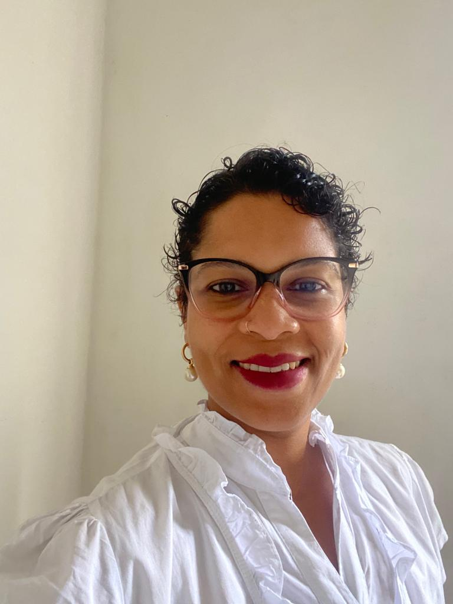

Maria Auxiliadora Santos Soares

Contatos Telefone:+55(71)99999-9999 Email: soaresmariaauxiliadora@gmail.com
Cidade Lauro de Freitas/Bahia
Sou técnica de edificações, enfermeira e, no momento, estou buscando me desenvolver na àrea de Tecnologia da Informação.
Sempre gostei de informática e o interesse aumentou com a participação na confecção de um programa para o Sindicato dos Enfermeiros do Estado da Bahia (SEEB), onde atuo como secretária geral (gestão 2020 - 2023).
A partir da enfermagem, já desenvolvi diversas atividades de coordenação, docência, tutoria e agora, como enfermeira da atenção básica.
Formação Acadêmica
2021-atual - Doutorado em Saúde Coletiva
2018-2020 - Mestrado em Saúde Comunitária
2007-2009 - Residência em Saúde Pública
2002-2007 - Graduação em Enfermagem
Formação Complementar
2023 - Curso de Programação (em andamento)
2023 - Curso de Manejo Clínico do Aleitamento Materno
2023 - Curso de Escrita Científica
2021 - Curso de Auriculoterapia
Organização de Eventos
- IV Conferência Municipal de Saúde de São Felipe - 2010
- I Mostra Municipal de Saúde de Dias D'Ávila - 2010
- IV Conferência Estadual de Saúde Mental Intersetorial do Estado da Bahia - 2010
Para mais informações:
Link Currículo Lattes
Topo